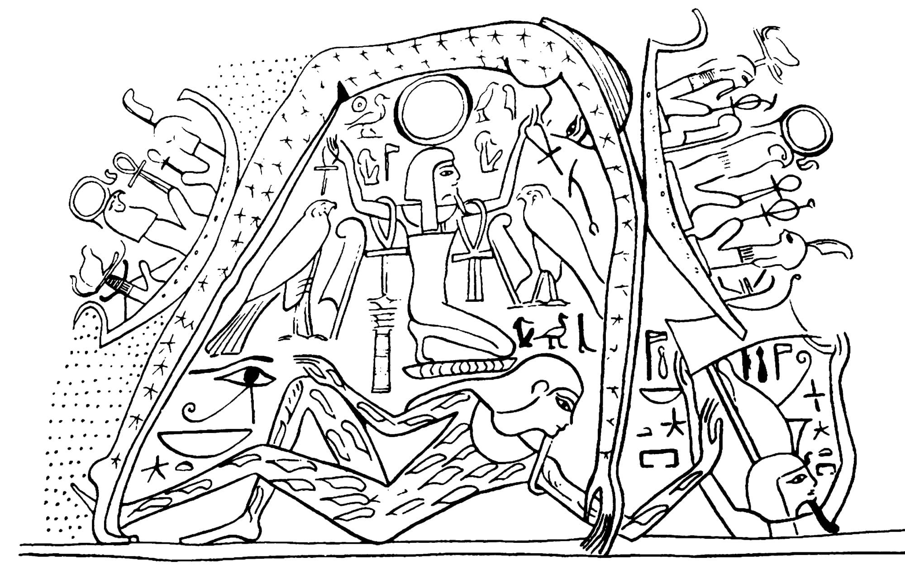
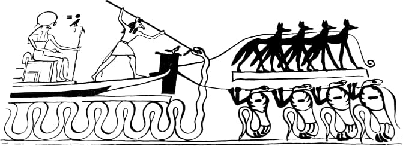

A egiptologia moderna começou depois que Napoleão tomou o Egito no início dos anos 1800, abrindo-o para as potências coloniais europeias. Jean-François Champollion, o primeiro egiptólogo famoso, decifrou a Pedra de Roseta e desbloqueou o sistema hieroglífico egípcio. Os textos-chave que contêm cosmologias egípcias são:Modern Egyptology began after Napoleon overtook Egypt in the early 1800s, opening it to European colonial powers. Jean-Francois Champollion, the first famous Egyptologist, deciphered the Rosetta Stone and unlocked the Egyptian hieroglyphic system. Key texts containing Egyptian cosmologies are:
O Livro dos Mortos (1500-1000 A.E.C.) “As águas falam: Eu sou as Águas, única, sem segunda. Atum fala: É aí que evoluí, na grande ocasião do meu flutuar que me aconteceu. Eu (Atum o criador) sou aquele que uma vez evoluiu— Circlet, que está em seu ovo. Eu sou aquele que começou ali, (nas) Águas. Veja, o Dilúvio é subtraído de mim: veja, eu sou o restante. Fiz meu corpo evoluir através da minha própria eficácia. Eu sou aquele que me fez. Eu me construí como desejei, de acordo com meu coração.” Hallo, William W. (1997). “The Coffin Texts 714.” The Context of Scripture: Canonical Compositions from the Biblical World, Vol. 1. Brill. 6-7.The Book of the Dead (1500s-1000s B.C.E.) “The waters speak I am the Waters, unique, without second. Atum speaks That is where I evolved, on the great occasion of my floating that happened to me. I (Atum the creator) am the one who once evolved— Circlet, who is in his egg. I am the one who began therein, (in) the Waters. See, the Flood is subtracted from me: see, I am the remainder. I made my body evolve through my own effectiveness. I am the one who made me. I built myself as I wished, according to my heart.” Hallo, William W. (1997). “The Coffin Texts 714.” The Context of Scripture: Canonical Compositions from the Biblical World, Vol. 1. Brill. 6-7.
O seguinte é a cosmologia heliopolitana egípcia como resumida por Bernard Batto em seu livro In the Beginning: Essays on Creation Motifs in the Ancient Near East and the Bible. O criador primevo é chamado Atum, que é equiparado a Nun, a substância aquosa não ordenada da qual todas as coisas emergiram. Esse estado de não-criação era uma condição aquosa caótica, desprovida de elementos ou estruturas necessárias para a vida, mas possuía o potencial para o desenvolvimento. Atum começou a evoluir e se diferenciar de sua incubação aquosa para um monte primevo de terra, que é simbolizado como a pirâmide prototípica, e de lá começou um processo de autodesenvolvimento ou “criação.” Ele gerou o resto da Enéada (um aglomerado de oito outras divindades) por autoimpregnação: Ele engole seus próprios fluidos reprodutivos e gera Shu (deusa do ar) e Tefnut (deusa da umidade), de quem vêm Nut (deusa do céu) e Geb (deus da terra). Atum assumiu seu papel como o “olho” de toda a criação, o deus sol Rá, e todos trabalharam juntos em uma forma de ordem chamada Ma'at, a ordem divina eterna que sustenta toda a criação.The following is Egyptian Heliopolitan cosmology as summarized by Bernard Batto in his book In the Beginning: Essays on Creation Motifs in the Ancient Near East and the Bible. The primeval creator is called Atum, who is equated with Nun, the unordered watery substance from which all things emerged. This state of non-creation was a chaotic watery condition devoid of elements or structures necessary for life, but it possessed the potential for development. Atum began to evolve and differentiate himself from his watery incubation onto a primeval mound of dirt, which is symbolized as the prototypical pyramid, and from there he began a process of self- development or “creation.” He generated the rest of the Ennea (a cluster of eight other deities) by self-impregnation: He swallows his own reproductive fluids and generates Shu (goddess of air) and Tefnut (goddess of moisture), from whom come Nut (goddess of sky) and Geb (god of earth). Atum took his role as the “eye” of all creation, the sun god Re, and they all worked together in a form of order called Ma’at, the eternal divine order that undergirds all creation.
Keel, Othmar (2016). “Figure 32” (p. 36). Symbolism of the Biblical World: Ancient Near Eastern Iconography and the Book of Psalms. Eisenbraums. Nut é a deusa do céu que é a cúpula celeste cheia de estrelas. Geb é o deus da terra, e Shu, o deus do ar, ajoelha-se sobre Geb e sustenta Nut. O deus sol Rá viaja nas águas acima de Nut, montando seu barco através do céu (canto superior esquerdo) e descendo ao reino das trevas e da morte para as águas sob a terra. Keel, Othmar (1997). “Figure 55” (p. 55). Symbolism of the Biblical World: Ancient Near Eastern Iconography and the Book of Psalms. Eisenbraums. O deus sol Rá é puxado através do mar do submundo à noite. O deus Sete atravessa e derrota o deus da morte Apófis (uma serpente), enquanto o barco é puxado por demônios noturnos subjugados (chacais e serpentes).Keel, Othmar (2016). “Figure 32” (p. 36). Symbolism of the Biblical World: Ancient Near Eastern Iconography and the Book of Psalms. Eisenbraums. Nut is the sky goddess who is the sky-dome full of stars. Geb is the land god, and Shu, the god of air, kneels on Geb and supports Nut. The sun god Re travels in the waters above the Nut, riding his boat across the sky (upper left) and descending into the realm of darkness and death to the waters under the land. Keel, Othmar (1997). “Figure 55” (p. 55). Symbolism of the Biblical World: Ancient Near Eastern Iconography and the Book of Psalms. Eisenbraums. The sun god Re is pulled through the underworld sea at night. The god Seth spears and defeats the death god Apophis (a snake), while the boat is pulled by subjugated night demons (jackals and snakes).


Como você entende a história da criação de Israel ter semelhanças com outras histórias de criação do antigo Oriente Próximo?How do you make sense of Israel’s creation story having similarities to other ancient Near Eastern creation stories?